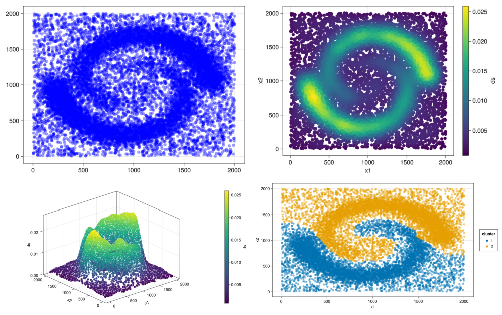
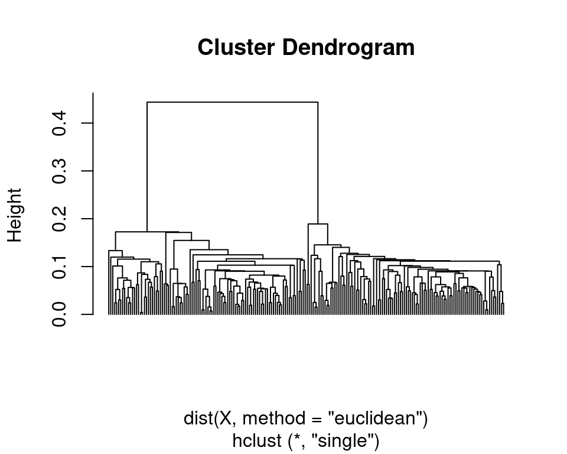
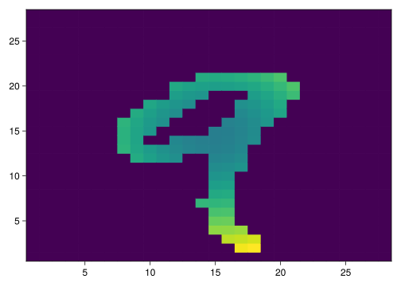
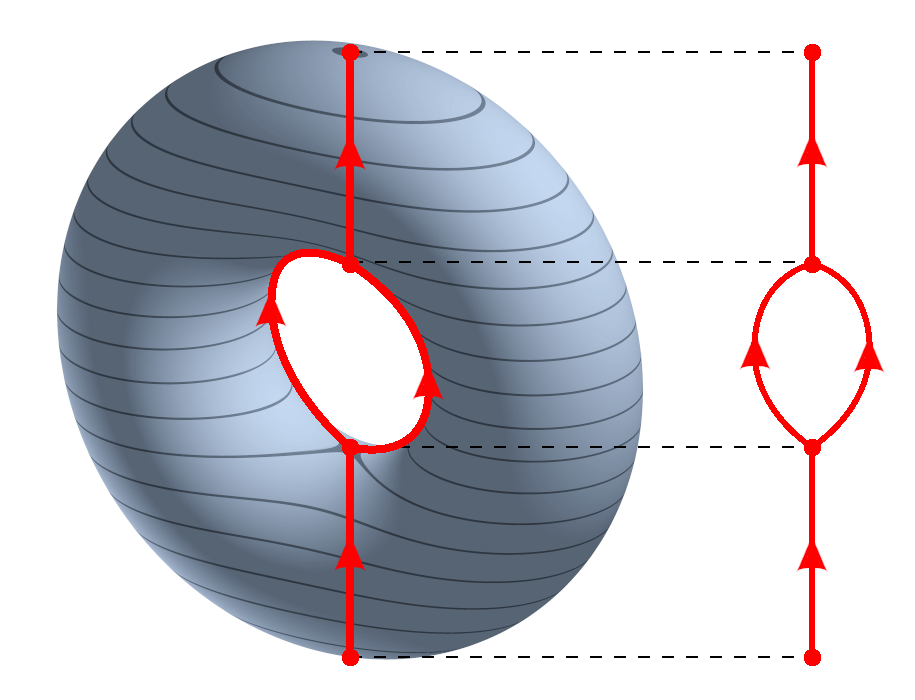

Sepal.Length Sepal.Width Petal.Length Petal.Width
1 5.1 3.5 1.4 0.2
2 4.9 3.0 1.4 0.2
3 4.7 3.2 1.3 0.2
4 4.6 3.1 1.5 0.2
5 5.0 3.6 1.4 0.2
6 5.4 3.9 1.7 0.4
7 4.6 3.4 1.4 0.3
8 5.0 3.4 1.5 0.2
9 4.4 2.9 1.4 0.2
10 4.9 3.1 1.5 0.1Topology meets the real world
How geometry can help us analyse finite metric spaces
Guilherme Vituri F. Pinto*, Laura R. Gambera**
*Head of Intelligence at Argus Solutions
**Data Scientist at Argus Solutions
Data in the wild
In many cases, real world datasets are tables and can be seen as a finite space \(X \subset \mathbb{R}^n\) for some \(n\), with some choice of metric to it.
Value from data
Means and percentage are cool, but we need more!
Detect trendings and cycles in data;
Correlations, causation and ways to avoid what is “bad” or maximize what is “good”;
Data science as a detective job;
Example: why drivers sleep more on Thursday?
A lazy topologist
“Mr. Topologist, can you analyse this dataset for me?”
Of course!
discrete space;
1700 connected components;
trivial \(H_n\) for \(n > 0\);
call it a day;
sleep like a baby.
Geometry in the real world
Topological Data Analysis builds bridges from:
Topological spaces => finite datasets:
Homology => persistent homology;
Reeb graph => mapper graph;
Connected components => single-linkage clustering.
Problem 1: clustering
Objective: partition a dataset into “useful” groups of points.
An analog for “connectivity” in the discrete case.
Getting started
\(x_1\) and \(x_2\) are measurements of something (facial features, temperature and pressure, etc.);
small error are usual;
the “true” value is in the center;
the “true” value is closer to the other values than “false” values.
ToMATo!
In (Chazal et al. 2011), the authors define the Topological Mode Analysis Tool, or ToMATo algorithm. The intuitive idea is the following:
ToMATo!
Step 1
Calculate a density estimator
Plot the mountains

Step 2
Create a proximity graph
Step 3
Chop the mountains!
Reindex \(x_1, ..., x_n \in X\) from highest to lowest.
Start with \(x = x_1\).
If no neighbor of \(x\) is higher than \(x\), then \(x\) form a cluster \(c_1\)
otherwise
\(x\) will be assigned to the cluster of its highest neighbor.
Keep going until all \(x \in X\) is assigned to a cluster.
Details
Arrange index set
x = x_1

no neighbor of \(x_1\) is higher than \(x_1\), then \(x_1\) form a cluster \(c_1\)
x = x_2
no neighbor of \(x_2\) is higher than \(x_2\), then \(x_2\) form a cluster \(c_2\)
x = x_3
\(x_3\) will be assigned to the cluster of its highest neighbor, \(c_1\)
x = x_4
\(x_4\) will be assigned to the cluster of its highest neighbor, \(c_2\)
:(
Terraforming
We had a lot of peaks that were too small to be considered as a true peak.
Add this step to the algorithm:
If a neighbor of \(x\) is a peak just a bit higher than \(x\), then merge its cluster to the one of \(x\).
Measure
\(| \text{dens}(x_2) - \text{dens}(x_3) | < \tau;\)
Merge
\(x_2\) and \(x_4\) are assigned to \(c_1\).
Final result with \(\tau\) = 0.02

Result with \(\tau\) = 0.04
ToMATo: two spirals with noise
ToMATo: components with noise
Problem 2: signatures
Objective: given a complicated object \(X\), create a simpler object \(S(X)\) which can give information about \(X\).
Example: \(X\) and \(Y\) are hard to compare, but
\[ S(X) \neq S(Y) \Rightarrow X \neq Y. \]
Connected components
Clustering algorithms depend on several parameters.
Is there a more natural way to count connected components on finite sets?
From finite to infinite
Center a ball of radius \(\epsilon\) in each point of \(X\) and make \(\epsilon\) vary.
\(X_\epsilon :=\) the union of these balls; \(K_\epsilon :=\) the nerve of \(X_\epsilon\).
Count the connected components of \(X_\epsilon\) or \(K_\epsilon\) for each \(\epsilon\).

Vietoris-Rips complex
In the previous construction, \(K_\epsilon\) is called the Vietoris-Rips complex of \(X\) at parameter \(\epsilon\).

Dendrograms
A dendrogram represents the birth and death of each connected component. It is agglomerative.

Enters topology
Connected components are measured by the \(H_0\) functor.
Dendrograms keep track of \(H_0\) generators.
Can we use \(H_n\) instead of \(H_0\)???????????????
Persistent homology
Given a family of simplicial complexes
\[ K_0 \hookrightarrow K_1 \hookrightarrow \cdots \hookrightarrow K_n \]
apply homology \(H_p\) over a field \(\mathbb{K}\)
\[ H_p(K_0) \rightarrow H_p(K_1) \rightarrow \cdots \rightarrow H_p(K_n) \]
to obtain a sequence of vector spaces and linear maps, called a persistence module.
Barcodes
A persistence module \(\mathbb{V}\) can be decomposed as a sum of interval modules, which gives us a multiset of intervals called barcode
\[ \text{dgm}(\mathbb{V}) = \{[b, d); \; (b, d) \in A\}. \]
Each interval \([b, d) \in \text{dgm}(\mathbb{V})\) can be seem as a generator of \(H_p\) (ie. a \(p\)-dimensional hole) that was “born” at \(K_b\) and “died” at \(K_d\).
Birth and death of “holes”
Stability
Small changes in \(X\) will change just a little of the barcodes.
Theorem: given \(X\) and \(Y\) finite metric spaces,
\[ d_b(\text{dgm}(X), \text{dgm}(Y)) \leq d_{GH}(X, Y). \]
Thus:
\[ d_b(\text{dgm}(X), \text{dgm}(Y)) \; \text{is big} \Rightarrow \\ \text{$X$ and $Y$ are very different}. \]
The complex factory
There are several way to build sequences of complex:
Vietoris-Rips complex;
Čech complex;
Alpha complex;
Sub-level or super-level filtration.
Sublevel filtration
Given \(f: X \to \mathbb{R}\), consider for any \(\epsilon \in \mathbb{R}\) the inverse image \[ X_\epsilon = f^{-1}((-\infty, \epsilon]) \] and proceed to calculate its persistent homology.
Source: (Čufar 2022)
The magic of vectors
Machine learning algorithms need vectors (or matrices) of a fixed size as input.
So, in order to use barcodes in machine learning, we need to vectorize them!
From barcodes to matrices
One successful construction (Adams et al. 2017) is the persistence image. The idea is the following:
Plot the persistence diagram;
Plot gaussians around each point;
Pixelate them.
Example
Using persistence homology to classify hand-written digits (see (Vituri 2024) for details).
Step 1
Calculate an excentricity estimator
Step 2
Do superlevel filtration
Step 3
Calculate the barcode and persistence images of each dimension
Step 4
What do we do with all these matrices?????????????
Enters machine learning!
Step 4 (magic)
Create a neural network that will take the persistence images as input.
Let it learn by itself!
Neural networks
Local transformation of a space into classes;
Tries to maximize the separation of these classes.
“Crumple together two sheets of paper into a small ball. That crumpled paper ball is your input data, and each sheet of paper is a class of data in a classification problem.” (Francois Chollet 2022)
Step 5
How good was our neural network?
After learning with 10.000 persistence images, we got an accuracy of
71%
which is pretty bad…
:(
The perils of isometry
Isometric spaces will have the same barcodes using the density function!
6 and 9 are isometric;
2 and 5 are very similar.
Improving
To get a better result, give more data to the neural network!
Create the sub-level filtration of the digits, using the projection on the x and y axis;
Calculate the barcodes and persistence images;
Concatenate all these persistence images in a big vector;
Feed the neural network.
Results
Now our accuracy rose to
95.1%
which seems pretty good for such naive approach!
The confusion matrix of our neural network classifier. Source (Vituri 2024)
The limits of topology
Plotting a sample of digits that our algorithm got wrong, we can see many ugly digits.
Problem 3: dimensionality reduction
Objective: See what can’t be seen!
Given a high-dimensional dataset \(X\), how can we visualize it while keeping some of its structure?
Reeb graph

Given a topological space \(X\) and a map \(f: X \to \mathbb{R}\), define \(\sim\) on \(X\) such that
\[ p \sim q \Leftrightarrow \text{$p, q \in f^{-1}(c)$} \\ \text{for some $c \in \mathbb{R}$.} \]
The Reeb Graph of \((X, f)\) is the quotient \(X / \sim\)
From infinite to finite
To adapt the Reeb graph to the finite case, we need to change:
- \(X\) topological space => \((X, d)\) finite metric space;
- \(f: X \to \mathbb{R}\) continuous => \(f: X \to \mathbb{R}\) any function;
- inverse images of points of \(\mathbb{R}\) => inverse images of intervals of \(\mathbb{R}\);
- connected components of \(X\) => clusters of \(X\).
The Mapper graph
- Define \(f: X \to \mathbb{R}\);
The Mapper graph
Define \(f: X \to \mathbb{R}\);
Choose a interval covering of \(f(X)\);
The Mapper graph
Define \(f: X \to \mathbb{R}\);
Choose a interval covering of \(f(X)\);
Apply a clustering on the inverse image of each interval;
The Mapper graph
Define \(f: X \to \mathbb{R}\);
Choose a interval covering of \(f(X)\);
Apply a clustering on the inverse image of each interval;
Apply the nerve construction on the sets of clusters.
A humble example
Application
Identifying type-2 diabetes.
Source: (Li et al. 2015)
Application two
Identifying of subgroup of breast cancer with excellent survival.
Source: (Nicolau, Levine, and Carlsson 2011)
One more application
The mapper identified more distinct styles of playing basketball than the traditional 5.
Two applications of the mapper algorithm using different coverings. Source: (Lum et al. 2013)
Distances on mapper
We can also use the mapper as a reduction of a space \(X\).
Source: (Piekenbrock 2020)
The general mapper
Looking from above, the mapper algorithm consists of two steps:
- (covering step) Given a metric space \((X, d)\), create a covering \(C\) of \(X\);
- (nerve step) Using \(C\) as vertex set, create a graph.
In the classical mapper context, \(C\) is generated using the clustering of pre-images of a function \(f: X \to \mathbb{R}\).
Ball mapper
The ball mapper algorithm (Dłotko 2019) in short:
- Cover \(X\) with balls of radius \(\epsilon\);
- Calculate the nerve.
Ball mapper of torus, \(\epsilon = 0.5\)
Ball mapper of torus, \(\epsilon = 0.8\)
Ball mapper of torus, \(\epsilon = 1.3\)
Closing remarks
Topology is not enough
TDA should be one more tool in your data analysis arsenal, not the only one.
Study TDA in the context of other algorithms which are already popular.
Advice from an old man
Study topology;
Study data analysis;
Learn to code! Julia, Python or R to start.
Most important: combine the three above.
Apply TDA!
…
……………….
Obrigado!!
References
Workshop on Algebraic Topology and Applications, 2023
Adams, Henry, Tegan Emerson, Michael Kirby, Rachel Neville, Chris Peterson, Patrick Shipman, Sofya Chepushtanova, Eric Hanson, Francis Motta, and Lori Ziegelmeier. 2017. “Persistence Images: A Stable Vector Representation of Persistent Homology.” Journal of Machine Learning Research 18.
Chazal, Frédéric, Leonidas Guibas, Steve Oudot, and Primoz Skraba. 2011. “Persistence-Based Clustering in Riemannian Manifolds.” Journal of the ACM 60 (June). https://doi.org/10.1145/1998196.1998212.
Čufar, Matija. 2022. “Ripserer.jl: Efficient Computation of Persistent Homology.” https://github.com/mtsch/Ripserer.jl.
Dłotko, Paweł. 2019. “Ball Mapper: A Shape Summary for Topological Data Analysis.” arXiv Preprint arXiv:1901.07410.
Francois Chollet, J. J. Allaire. 2022. Deep Learning with r.
Li, Li, Wei-Yi Cheng, Benjamin S Glicksberg, Omri Gottesman, Ronald Tamler, Rong Chen, Erwin P Bottinger, and Joel T Dudley. 2015. “Identification of Type 2 Diabetes Subgroups Through Topological Analysis of Patient Similarity.” Science Translational Medicine 7 (311): 311ra174–74.
Lum, Pek Y, Gurjeet Singh, Alan Lehman, Tigran Ishkanov, Mikael Vejdemo-Johansson, Muthu Alagappan, John Carlsson, and Gunnar Carlsson. 2013. “Extracting Insights from the Shape of Complex Data Using Topology.” Scientific Reports 3 (1): 1236.
Nicolau, Monica, Arnold J. Levine, and Gunnar Carlsson. 2011. “Topology Based Data Analysis Identifies a Subgroup of Breast Cancers with a Unique Mutational Profile and Excellent Survival.” Proceedings of the National Academy of Sciences 108 (17): 7265–70. https://doi.org/10.1073/pnas.1102826108.
Piekenbrock, Matt. 2020. “Mapper.” https://peekxc.github.io/Mapper/.
Vituri, Guilherme. 2024. Topological Data Analysis with Julia. https://vituri.github.io/TDA_with_julia/.